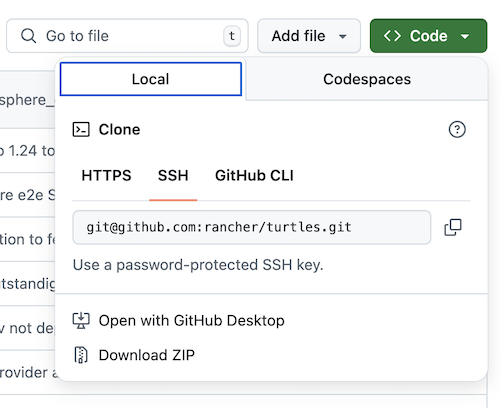

Create & Import Your First Cluster
This section will guide you through creating your first cluster and importing it into Rancher Manager. Two alternative methods for cluster provisioning are presented: using a GitOps workflow with Fleet and manually applying the manifests via kubectl.
Prerequisites
-
Rancher Manager cluster
-
Cluster API providers installed for your scenario - we’ll be using the Docker infrastructure and RKE2 bootstrap/control plane providers in these instructions - see Initialization for common providers using Turtles'
CAPIProvider
Provision a CAPI Workload Cluster
-
GitOps using Fleet
-
Manually using kubectl
Configure your Fleet repository
To simplify the process of cluster provisioning, we will be using a series of pre-configured examples that you can find in the repository https://github.com/rancher/turtles/tree/main/examples. By inspecting the contents of this repository, you will find:
-
An applications folder for additional apps that can be deployed using Fleet (CNI, CSI, CPI).
-
A clusterclasses folder with a bunch of ClusterClass examples.
-
A clusters/docker/rke2 folder with an example of Docker cluster definition.
| If you prefer, you can create your own Fleet repository using the same base structure. |
Use Rancher UI to add your Fleet repository
Now the cluster definitions are committed to a git repository they can be used to provision the clusters. To do this they will need to be imported into the Rancher Manager cluster (which is also acting as a Cluster API management cluster) using the Continuous Delivery feature (which uses Fleet).
-
Go to Rancher Manager
-
Select Continuous Delivery from the menu:

-
Select fleet-local as the namespace from the top right

-
Select Git Repos from the sidebar
-
Click Add Repository
-
Enter clusters as the name
-
Get the HTTPS clone URL from your git repo 
-
Add the URL into the Repository URL field
-
Change the branch name to main
-
Add the following paths to specify which directories to deploy:
examples/clusterclasses/docker/rke2 examples/applications/cni/calico examples/applications/lb/docker examples/clusters/docker/rke2
-
Click Next
-
Click Create
-
Click on the clusters name
-
Watch the resources become ready
-
Select Cluster Management from the menu
-
Check your cluster has been imported
Apply the cluster resources
To create the cluster using kubectl, run the following commands:
-
Open a terminal and apply the ClusterClass and related templates:
kubectl apply -f https://raw.githubusercontent.com/rancher/turtles/refs/heads/main/examples/clusterclasses/docker/rke2/clusterclass-docker-rke2.yaml -
Apply the load balancer configuration:
kubectl apply -f https://raw.githubusercontent.com/rancher/turtles/refs/heads/main/examples/applications/lb/docker/configmap.yaml -
Apply the CNI (Calico) configuration:
kubectl apply -f https://raw.githubusercontent.com/rancher/turtles/refs/heads/main/examples/applications/cni/calico/helm-chart.yaml -
Create the cluster:
kubectl apply -f https://raw.githubusercontent.com/rancher/turtles/refs/heads/main/examples/clusters/docker/rke2/cluster.yaml -
Watch the resources become ready:
kubectl get clusters -w -
Select Cluster Management from the menu
-
Check your cluster has been imported
Mark Namespace for auto-import
To automatically import a CAPI cluster into Rancher Manager there are 2 options:
-
Label a namespace so all clusters contained in it are imported.
-
Label an individual cluster definition so that it’s imported.
In both cases the label is cluster-api.cattle.io/rancher-auto-import.
|
The example cluster we just created is already configured for auto-import, but this section shows you how to configure it manually for your own clusters. |
This walkthrough will use the first option of importing all clusters in a namespace.
-
Open a terminal
-
Label the cluster’s namespace in your Rancher Manager cluster:
kubectl label namespace capi-clusters cluster-api.cattle.io/rancher-auto-import=true|
A namespace (or cluster) can be marked for auto-import at any time: before or after the cluster has been created. |
|
Marking a cluster for auto-import triggers automatic registration by the Turtles controller, manual execution of registration commands is not required. |
|
To prevent a cluster from getting stuck in deletion when Fleet is removed, keep auto-import enabled in the UI or avoid manually removing labels in the cluster’s namespace, as Turtles will no longer handle the 'import' functionality from that point onward. |